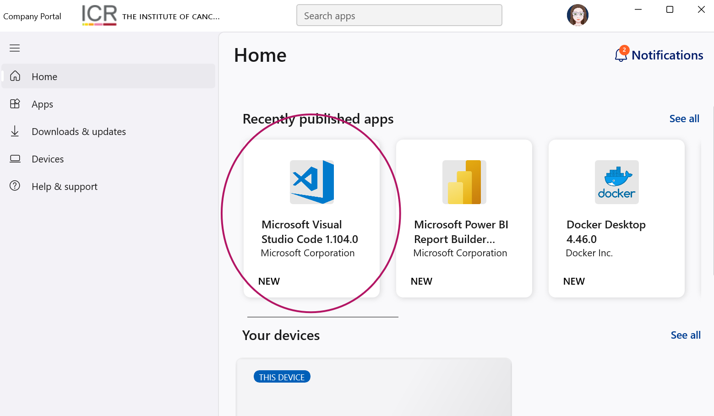
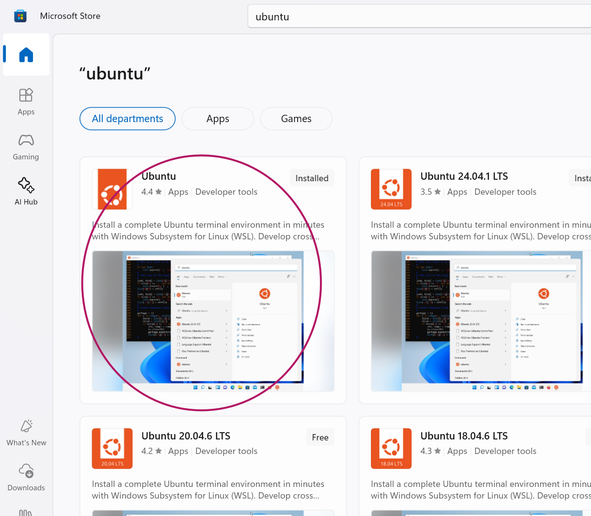
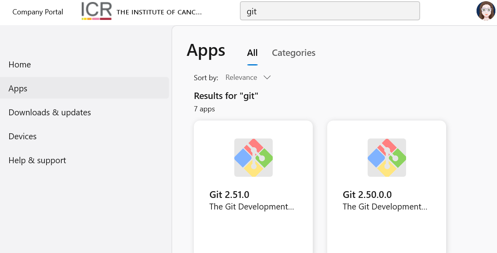
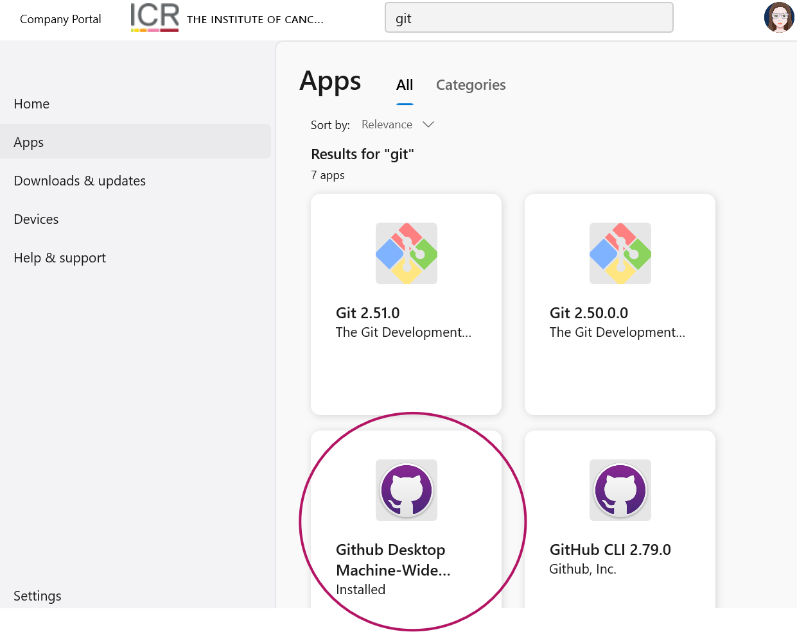
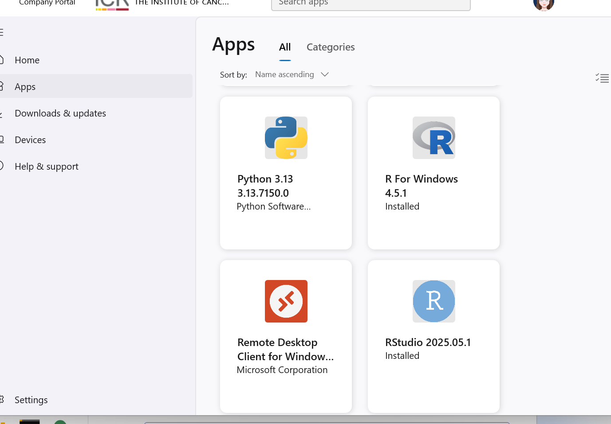
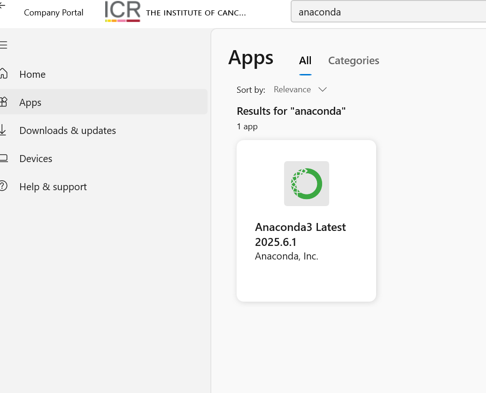
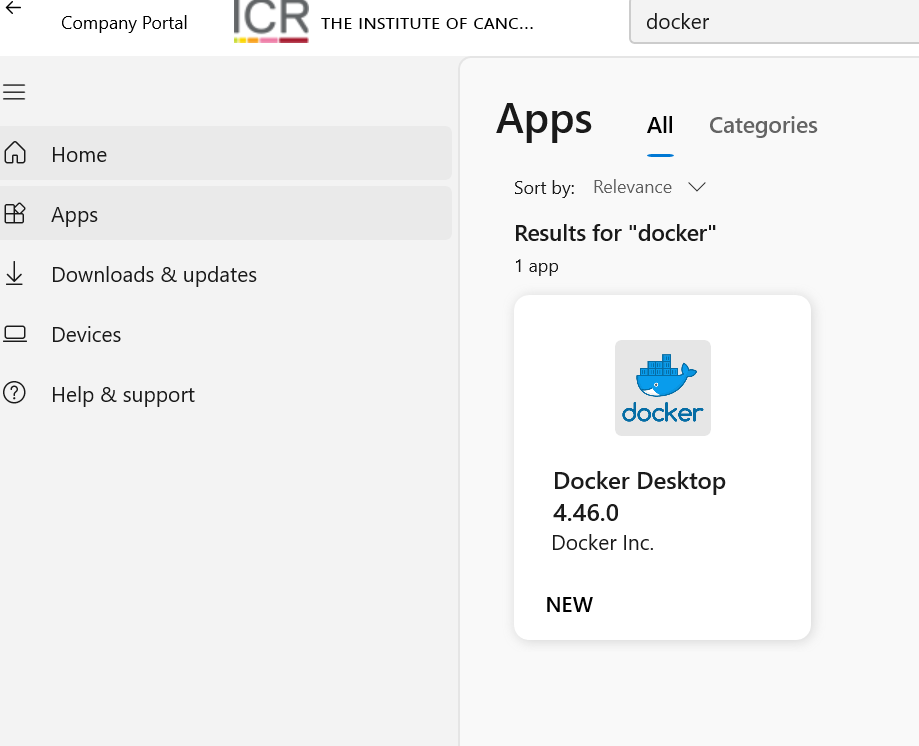
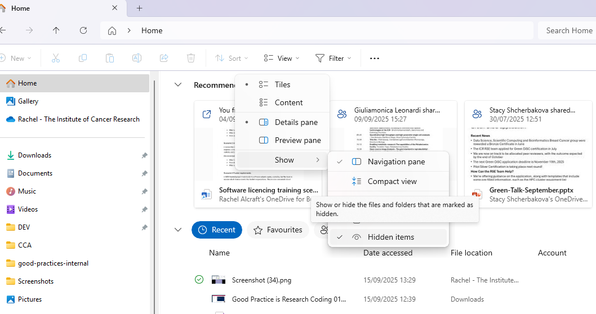

5-Session Coding Good Practices Course
Prerequisites and Setup Guide
Complete these setup steps before the first session to ensure a smooth learning experience.
If you have any problems, please contact the RSE team for help!
Overview
This course will teach you coding good practices for reproducible research referencing The Turing Way framework. To participate fully, you'll need several tools installed and accounts configured. Please complete all setup steps below.
For any of the elements that you do not have access to, you can go back and do the session again following the recording, or the RSE team will help you in a drop-in session in the RSE office.
The summary of the requirements is broken down for each day, with links to fuller instructions below.
Monday's Session
- Install VSCode
- Access a terminal
- Have an HPC Alma account
- Optionally set up Alma ssh keys
- Optionally setup remote-ssh for VSCode
Tuesday's Session
- Install VSCode
- Install and configure Git
- Install GitHub Desktop (Windows/Mac)
- Set up (internal) GitLab access
- Set up GitHub access (institutional account)
Wednesday's Session
Thursday's Session
Friday's Session
Software Installation
For all software installations at the ICR it is recommended to check with servicedesk@icr.ac.uk. There has beeen a process of centralising installations for Windows 11 machines, and the installations ought to be available through Company POrtal. Always check this first as when installed here you do not need admin rights. Otherwise you will probably need assistance for any installs. Mac users will need admin rights for most installs but it is changing rapidly so please check. In general the links are given to open source software installs but first check Company Portal and ask servicedesk@icr.ac.uk
Install VSCode
Windows
For Windows The application can be installed from Company Portal.

Mac
For Mac the application can be downloaded and installed from here code.visualstudio.com/Download.
Choose the User Installer for your system (Apple Silicon or Intel).
Access a terminal
Windows
Use PowerShell or Command Prompt. But install WSL2 (Windows Subsystem for Linux) for a better experience. This can be installed from Windows Store:

Alternatively you can use GitBash for a linux-like terminal experience. This is also available on company portal.

Mac
Use the built-in Terminal application.
Have an HPC Alma account
Alma Pages on Nexus have information on getting started with Alma, or contact schelpdesk.icr.ac.uk.
Set up Alma ssh keys
Setup remote-ssh for VSCode
code.visualstudio.com/docs/remote/ssh
AlmaCookBook link
Install and configure Git
Windows
Install Git from the Company Portal:
Mac
Use HomeBrew, the mac store, or download from git-scm.com.
Install GitHub Desktop
Windows
For Windows The application can be installed from Company Portal.

Mac
For Mac the application can be downloaded and installed from here desktop.github.com.
Set up GitLab access
Internal GitLab is here: git.icr.ac.uk/ - sign on using LDAP and your ICR shortname and password.
We will walk through this ssh key setup in the git session: docs.gitlab.com/user/ssh
Set up GitHub access
Send an email to schelpdesk.icr.ac.uk to request an institutional GitHub account. You will receieve an invite to your icr email address.
The ICR main GitHub page is: github.com/instituteofcancerresearch - you can also have lab pages set up, contact us to ask for help.
Install Python
Windows
For Windows The application can be installed from Company Portal.

Mac
Python should be pre-installed. You can check by running python3 --version in the terminal. If not, install it from python.org.
R and RStudio
Windows
For WSL2
To use RStudio from WSL2 as if native install it in linux. This command worked for me:
Depending on the linux variaiton:
# you may need to install some libraries
sudo apt-get update
sudo apt-get install r-base
sudo apt-get install gdebi-core
sudo apt-get install libglib2.0-0
sudo apt-get install libnspr4
sudo apt-get install libnss3
sudo apt-get install libatk1.0-0
sudo apt-get install libatk-bridge2.0-0
sudo apt-get install libcups2
sudo apt-get install libcairo2
sudo apt-get install libgtk-3-0
sudo apt-get install libgbm1
sudo apt-get install libasound2
sudo apt-get install libcurl4-openssl-dev
sudo apt-get install libssl-dev
sudo apt-get install libfontconfig1-dev
sudo apt-get install libharfbuzz-dev libfribidi-dev
sudo apt-get install -y libfreetype6-dev libpng-dev libtiff5-dev libjpeg-dev libwebp-dev
sudo apt-get install pkg-config
# Either
wget https://download1.rstudio.org/electron/jammy/amd64/rstudio-2025.09.0-387-amd64.deb
sudo gdebi rstudio-2025.09.0-387-amd64.deb
# or
sudo snap install rstudio --classic
Mac
Install R from CRAN and RStudio from RStudio.
Install Conda (Anaconda)
Windows
Install Anaconda from the Company Portal:

WSL2
wget https://repo.anaconda.com/miniconda/Miniconda3-latest-Linux-x86_64.sh
chmod +x Miniconda3-latest-Linux-x86_64.sh
./Miniconda3-latest-Linux-x86_64.sh
Mac
Install Anaconda from anaconda.com:
Install Docker
Windows
For Windows The application can be installed from Company Portal.

Mac
For Mac the application can be downloaded and installed from here docker.com.
See Hidden Files
Windows
For Windows The application can be installed from Company Portal.

Mac
Inside Finder on Mac, you can show hidden files with "Cmd + Shift + ."
Install Singularity
// ...existing code...
Install Singularity
Windows
Singularity/Apptainer is not natively supported on Windows. advanced users only).
Mac
# Install Homebrew if not already installed
/bin/bash -c "$(curl -fsSL https://raw.githubusercontent.com/Homebrew/install/HEAD/install.sh)"
# Install Apptainer (successor to Singularity)
brew install apptainer
Linux (WSL2/Ubuntu/Debian)
# Install dependencies
sudo apt update
sudo apt install curl gnupg
# Add repository and install
curl -fsSL https://download.opensuse.org/repositories/home:/apptainer/Debian_12/Release.key | sudo gpg --dearmor -o /usr/share/keyrings/apptainer-archive-keyring.gpg
echo "deb [signed-by=/usr/share/keyrings/apptainer-archive-keyring.gpg] https://download.opensuse.org/repositories/home:/apptainer/Debian_12/ /" | sudo tee /etc/apt/sources.list.d/apptainer.list
sudo apt update
sudo apt install apptainer
Verify Installation:
# Check version
singularity --version
# Test with hello world
singularity pull docker://hello-world
singularity run hello-world_latest.sif